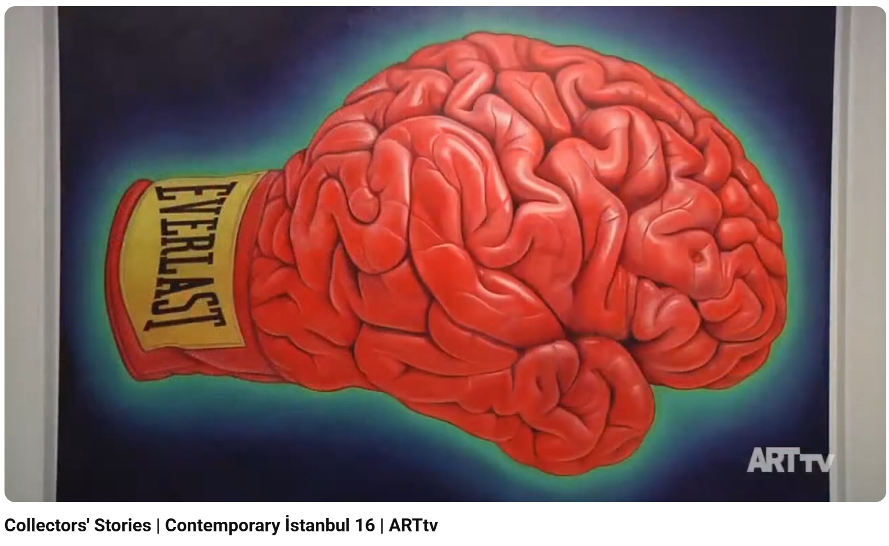

Exhibitions
Collectors’ Stories, Contemporary Istanbul, Lütfi Kırdar ICEC Rumeli Hall and Istanbul Congress Center, Istanbul, Turkey, November 3–6, 2016.
Literature
Ron English, Fauxlosophy: The Art of Ron English (San Francisco: Last Gasp, 2016), p. 122. ISBN 978-0867196566.
Ron English, Original Grin: The Art of Ron English (Paris: Cernunnos, 2019), p. 144. ISBN 978-2374950938.
Notes
This work references Everlast boxing gloves.
This work appears at 2:52 in ARTtv’s YouTube video Collectors’ Stories | Contemporary İstanbul 16 | ARTtv.
The work also appears in Joab Jackson’s photo coverage of Allouche Gallery’s 2014 opening and in Nilay Örnek’s article on Contemporary Istanbul’s Collectors’ Stories.
Ancillary Documentation

